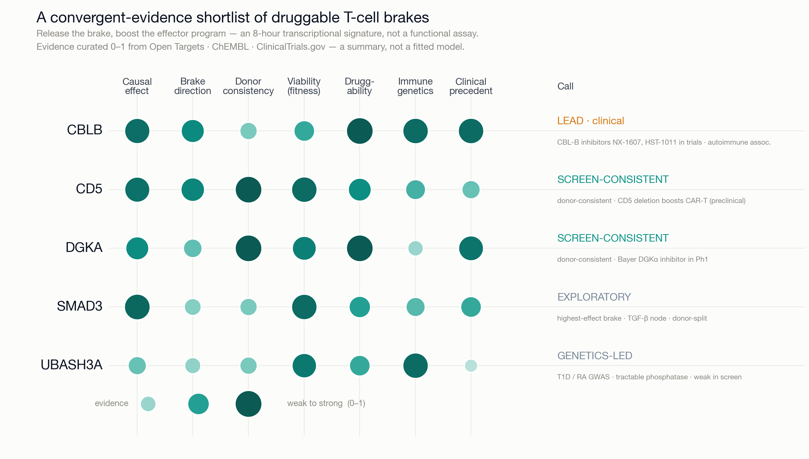

BRAKEPOINT
Built with Claude · Life Sciences (research track)
Gladstone genome-scale CD4⁺ T-cell CRISPRi Perturb-seq
Gladstone genome-scale CD4⁺ T-cell CRISPRi Perturb-seq
Releasing a T cell's brakes is how checkpoint immunotherapy works.
From a 2.6-million-cell CRISPRi Perturb-seq screen, Brakepoint nominates a shortlist of candidate targets whose knockdown shifts human CD4⁺ T cells toward a stronger effector transcriptional state — a brake-release strategy mechanistically analogous to checkpoint blockade — led by CBLB, whose inhibitors are in early-phase trials.
12,449
gene knockdowns screened, genome-scale
5
prior-informed candidate brakes, scored on convergent evidence
CBLB
lead — oral CBL-B inhibitors in early-phase trials

Convergent-evidence matrix. Effect · direction · donor-consistency · viability from the genome-scale CD4⁺ leaderboard; druggability · immune-genetics · clinical from Open Targets · ChEMBL · ClinicalTrials.gov.
LEAD TARGET · CBLB
A brake in clinical testing.
Two oral CBL-B inhibitors in trials — NX-1607 (Ph1), HST-1011 (Ph1/2).
An autoimmune-risk association; Cbl-b loss enhances T-cell activation in preclinical models — the CBL-B inhibitor trial rationale.
Donor-split at n=2 (right) — a prioritized nomination for the full cohort, reported honestly.

Why it's different · vs standard analysis
EFFECT SIZE, NOT P-VALUEAt this scale 97.5% of the 11,438 tested knockdowns clear significance — so we rank by power-equalized E-distance, not p-value.
THE SIGNED AXISA direction-of-effect score separates a candidate brake from essential machinery — the sign an unsigned effect-size ranking omits.
REPRODUCIBLE + CHECKEDThe figures regenerate with one command; an adversarial self-check caught a real bias in the effect-size code before any figure.
Signed causal map · genome-scale · built with Claude Science
github.com/duanchengchen-oss/brakepoint · make figure